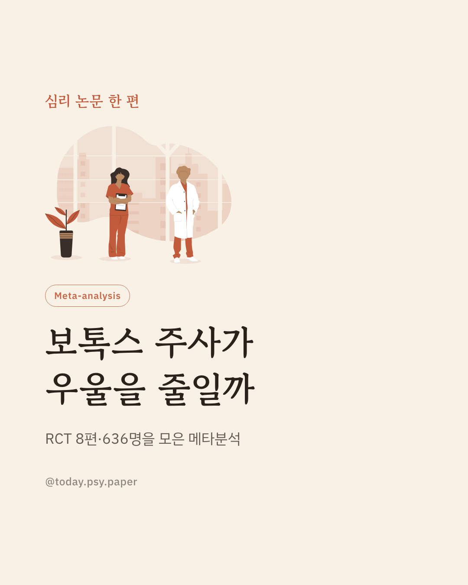
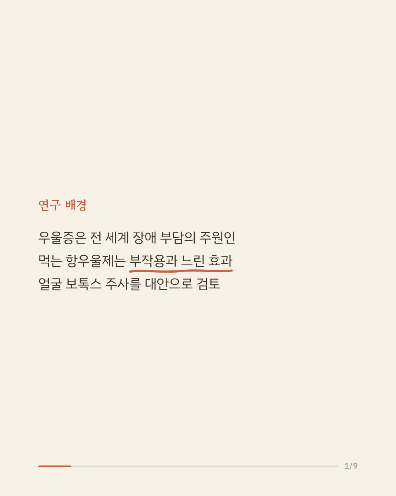
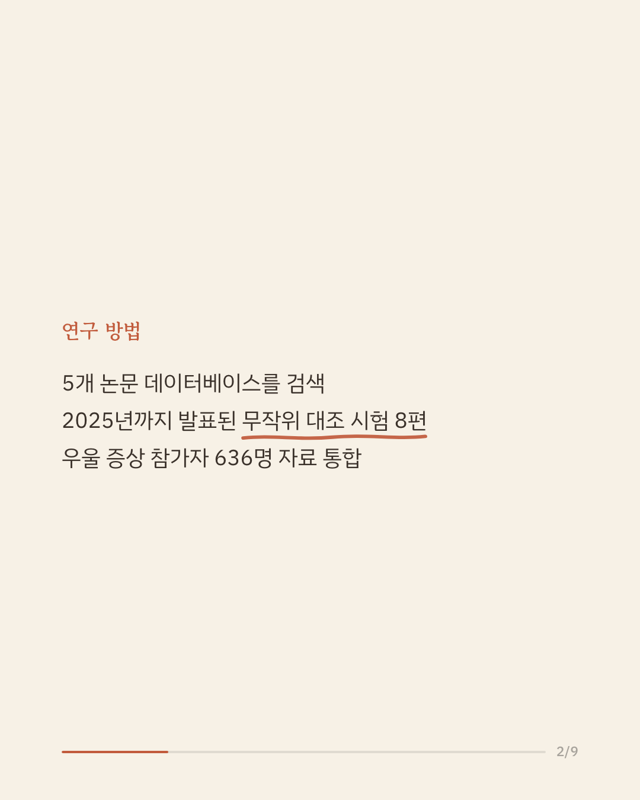
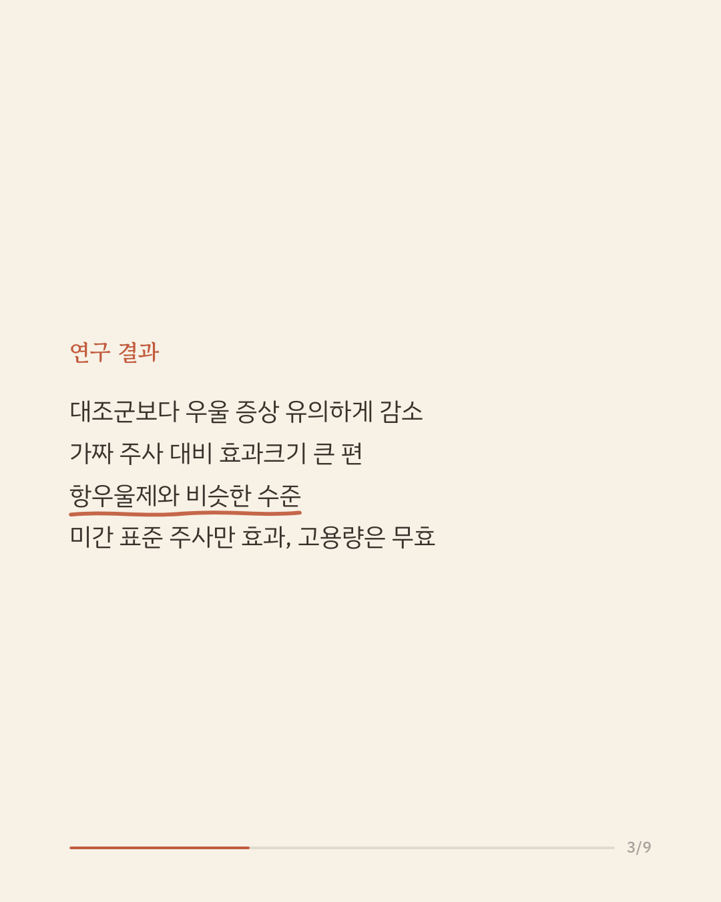
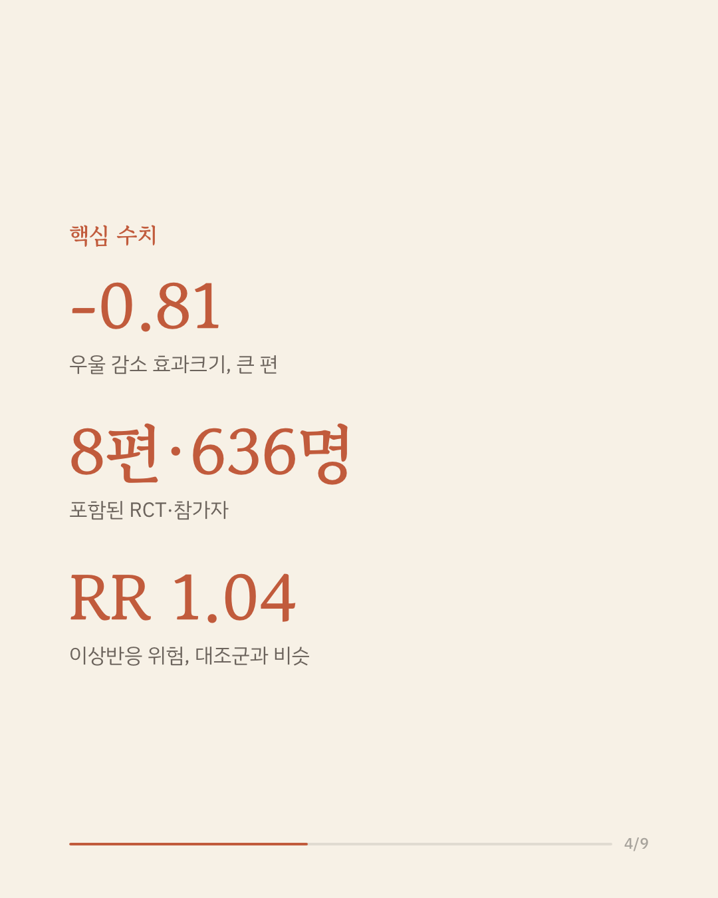
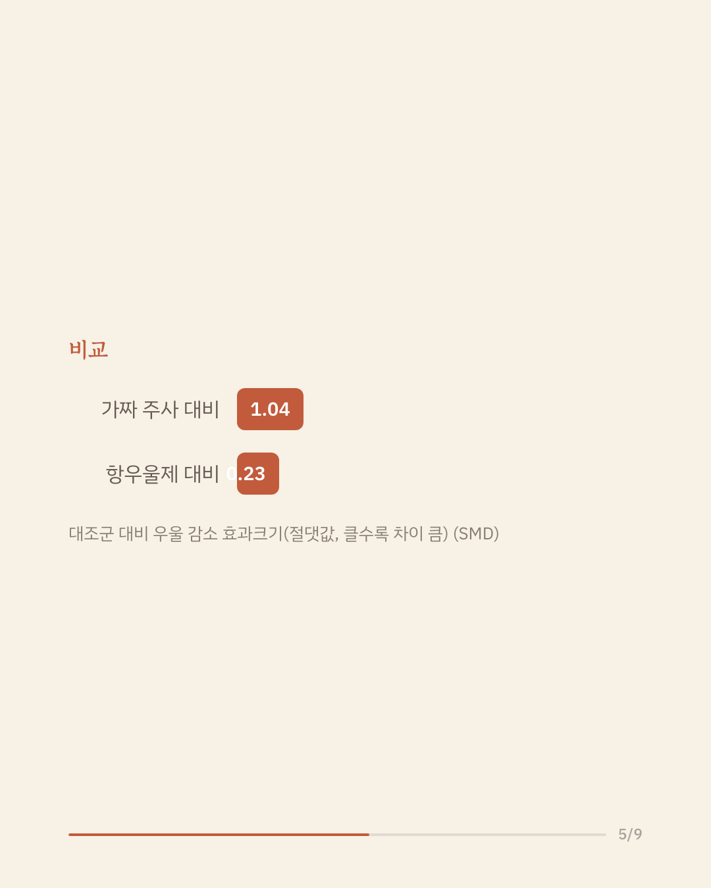
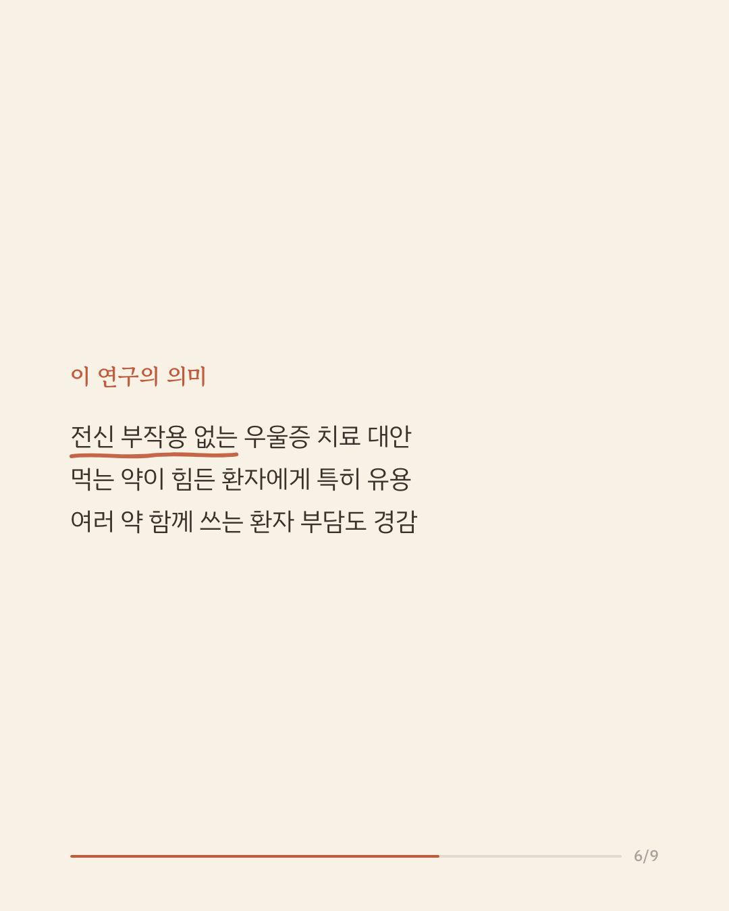
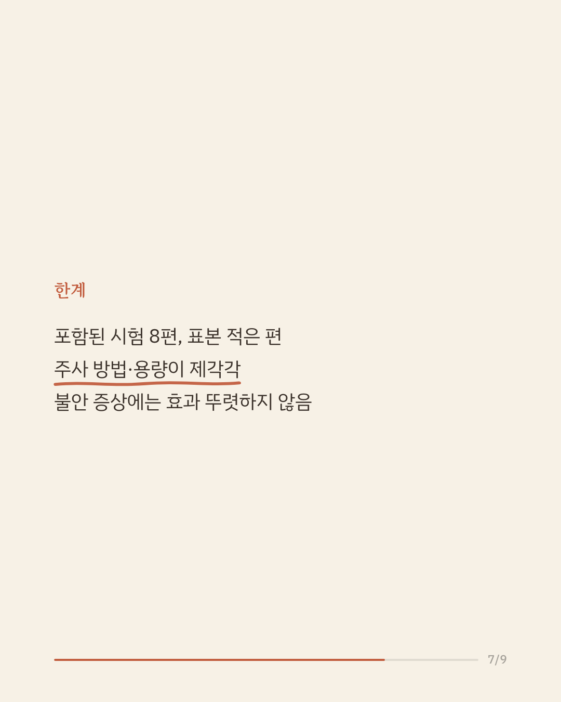
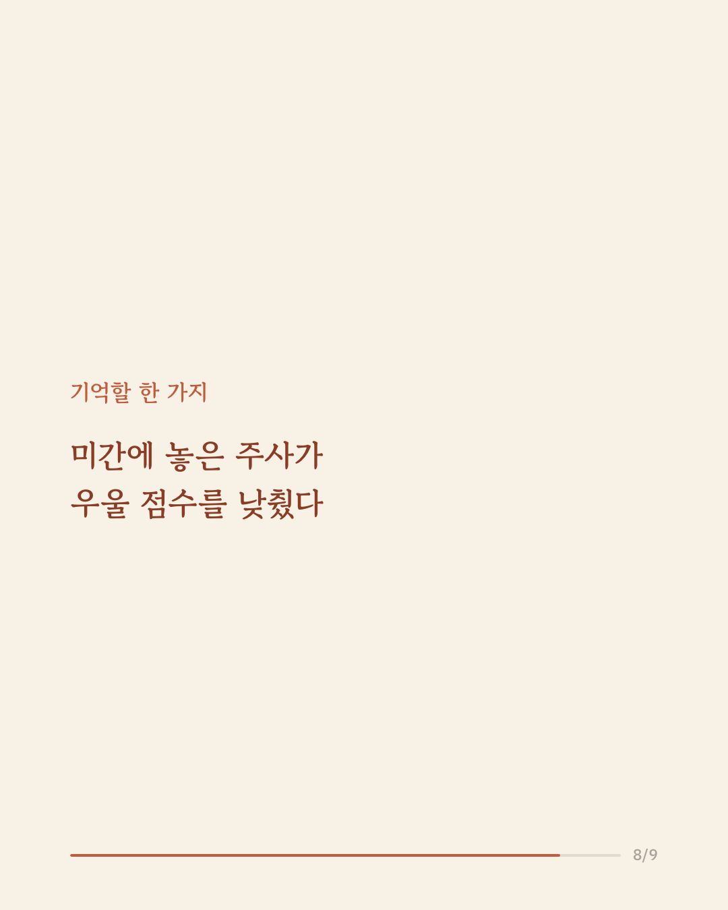
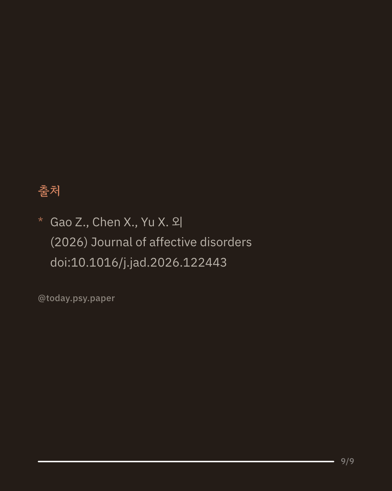

우울증 치료에는 보통 먹는 항우울제를 쓰지만, 전신 부작용이 있고 효과가 나타나기까지 시간이 걸립니다. 그래서 얼굴 근육에 놓는 보툴리눔 톡신A(보톡스) 주사가 대안이 될 수 있는지 오래 논의돼 왔습니다. 이 연구는 관련 무작위 대조 시험 8편, 참가자 636명의 자료를 모아 메타분석했습니다. 분석 결과 얼굴 보톡스 주사는 대조군에 비해 우울 증상을 유의하게 줄이는 것과 관련이 있었고, 효과크기는 중간에서 큰 편이었습니다(SMD -0.81). 가짜 주사보다는 뚜렷하게 나았고 항우울제 서트랄린과는 비슷한 수준이었으며, 이상반응은 대조군과 비슷하되 전신 부작용 없이 일시적인 국소 반응에 그쳤습니다. 먹는 약을 견디기 어렵거나 여러 약을 함께 복용하는 환자에게 전신 부작용이 적은 선택지가 될 수 있다는 점에서 의미가 있습니다. 다만 포함된 시험이 8편으로 적고 주사 부위와 용량이 제각각이며 불안 증상에는 효과가 뚜렷하지 않았고, 근거가 아직 쌓이는 단계이므로 확대 해석은 조심해야 합니다. 출처: Journal of Affective Disorders (2026), 'Antidepressant effects of facial botulinum toxin A injections: Insights from randomized controlled trials' #임상심리 #정신건강정보 #우울증치료 #보툴리눔톡신 #항우울제
python3 publish.py 42669382